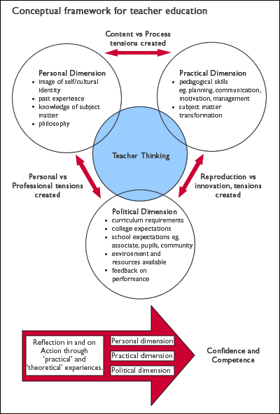

Research / Readings Research / Readings |
Research
Teaching in 3D
by Merryn Dunmill
Introduction
Research into teacher development is often underpinned by the premise that through understanding what teachers do and how they think, improvements can be made to the quality or outcome, that is, more informed students, higher quality schools, and ultimately a better society. Political pressure to review teaching for improved outcomes has been more noticeable in recent years as market-driven philosophies assume dominance in Western societies.
"There must be a continuous process of educational renewal in which college and universities, the traditional producers of teachers, join with schools, the recipients of the products, as equal partners in the simultaneous renewal of schooling and the education of educators. The sooner the process begins, the sooner we will have good schools" (Goodlad, 1994, p.2).
Teacher education courses are often at the mercy of prescriptive changes to curriculum, which have been imposed by government policy. In New Zealand, the National Curriculum Framework (1993) has imposed considerable change for schools in interpreting which subjects are to be taught and how these newly clustered "essential learning areas" and "essential skills" for life relate to new national assessment frameworks. We now have The Arts Curriculum, to be made mandatory in 2003, which comprises four arts disciplines, viz. Dance, Drama, Music and The Visual Arts. This document sees the last of seven essential learning areas, The Arts, developed as a curriculum document for levels 1-8 (the entire schooling of a student). In the secondary system the National Certificate of Educational Achievement is being incrementally introduced, replacing School Certificate, Sixth Form Certificate and Bursary. The new system requires teachers to assess to national standards. The curriculum is divided into credit-based "Achievement Standards" and/or "Unit Standards", the credits accruing to provide students with qualifications that hook into the tertiary framework.
The implementation of any change from outside adds stress to the professional work of teachers in an already overloaded curriculum. These current changes are no exception. The impact on teacher education courses is obvious. Prospective teachers about to enter the profession must be able to facilitate learning to meet national curriculum and assessment requirements. In addition, the social, cultural and political dimensions of teaching are strengthening forces to be reckoned with. Teachers, now more than ever before, are expected to not only teach this curriculum, assess student progress, manage the learning environment, and meet community expectations, but also serve a complex pastoral role in assisting with the socialisation of students. This, the personal, socialising dimension of education, is often overlooked in research on teacher development, yet is central to what and how teachers teach students in their classes.
More recent studies into teacher thinking take account of teachers' personal practical knowledge and theories, and include investigation of beliefs and attitudes, the metaphors teachers use, and how these change through experience. If the student teacher is to be "educated" towards pedagogical knowledge and competence, then their ideas and philosophies about teaching need to be taken into account. A number of studies establish that beliefs held by novice teachers undergo little or no change during their teacher education programmes (Lortie, 1975; Tabachnick & Zeichner, 1984; Feiman-Nemser & Floden, 1986; Zeuli & Buchmann, 1988). Bullough and Knowles (1991) conclude that teacher educators and supervising teachers in schools should support beginning teachers to explore, analyse and clearly articulate the metaphors and images of teaching that they bring with them at point of entry. Robertson (1997) supports and investigates this premise further within a generic, non-curriculum specific framework, and presents a model for conceptualising oneself as teacher, based upon three complementary role categories:
- Teacher as provider/manager
- Teacher as facilitator/motivator
- Teacher as nurturer/role model
There is much support for the view that novice teachers' perceptions of learning and teaching are constructed on personal experiences and are shaped by firmly held beliefs.

A conceptual model
The following "developed" model aims to synthesise the various dimensions and approaches to understanding teacher thinking. It is conceptually based around a three-dimensional framework of Barone et al (1996).

To become a competent and confident teacher, the student teacher's knowledge and skills bases need to be articulated and reflected upon before further considered action (teaching) takes place. So the personal dimension involves the student teacher considering their world views, cultural identity, past experiences, particular subject strengths, and beliefs about teaching and learning.
The practical dimension requires implementation of skills and knowledge in a particular context. Tensions that arise between these dimensions revolve around what they know and how they should apply it in a set context.
As student teachers are placed in a practical classroom setting, they are expected to teach in two distinctive, and sometimes conflicting ways – those they have developed at college and those that associate teachers require of them. Tensions are created when the student teacher is faced with dilemmas of reproducing what exists, or introducing their own methods and materials (innovation). The power relationships are clearly critical, with particular tensions caused through external "forces" such as national curriculum requirements, school resourcing, and institutional expectations.
This political dimension is often neglected in discussions on teachers' knowledge. However, it is as important to analyse this dimension, as it is the personal and practical dimensions. The conflict facing student teachers is significant when faced with external restrictions that may be at odds with their personal beliefs. Tension then arises between developing expected professional qualities to fit the political expectations, and in developing personal beliefs and understandings. Balancing the dimensions, shifting comfortably within and between them, is a difficult task for a beginning teacher. In my view, student teachers should be encouraged to recognise, analyse and articulate the three dimensions and their respective elements. This is the key to teacher education and the way toward "strong professionalism". As such, the "developed" model presented could serve as a paradigm for future teacher education programmes or courses of study.
Conceptualising secondary school music teaching
From a generic theoretical framework, I will now move to consider components that are specific to the teaching of music. How well can such a model apply to the teaching of music, specifically in schools?
Literature that considers the teaching of music in schools is largely focused on the nature of music itself.
"I am concerned that music is too powerful a subject to compromise its individuality to educational theory" (Fletcher, 1987, p. v).
It is evident, however, that theorising does form a basis for the discussion around what and how music is taught. "Theories are not the opposite of practice but its basis" (Swanwick, 1988, p. 7). Teacher thinking in music education can be analysed within the generic model provided and through the influential definitions of composition,
performance and audition ("listening"), and through the aesthetic, historical, cultural and structural elements of the music itself.
Music teaching can be framed by using the generic model. Through this three-dimensional framework it is possible to interpret music teaching and learning and to gain some insight into what, how and why music is taught.
It could be argued that the personal dimension is more powerful in the teaching of music than in almost any other subject in the school curriculum. Music touches the essence of people's feelings. It reflects and influences the very specific backgrounds, beliefs, philosophies, skills and knowledge bases that the teacher brings to the task of teaching. Teachers' beliefs influence which aspects of the music curriculum need particular emphasis, in turn prescribing the instruction they provide students. In practical terms, how much time is given to particular aspects of curriculum content, which musical genres or musical styles are emphasised, and the teaching philosophies that underpin it all, are founded in this dimension.
The practical dimension draws not only on the pedagogical skills of the teacher but also on the particular skills and knowledge transformations that are uniquely musical. The musical procedures of the practical dimension have a life of their own. This is where information is reinterpreted and transformed by teachers and learners. It is, for example, where jazz and rock chords are listened to and their musical systems explored. Activities and approaches to this learning will be based on the symbolic forms of music. The context is less obvious than the direct experience of the symbolic forms relating to the particular genres selected.
In the political dimension, music teaching may be described as social enculturation for it is here that teachers respond to, manipulate and define cultural reality. Aesthetic response and the expression of value are culturally loaded and individualistic. Music teachers clearly play a critical role in helping students to enjoy, analyse and understand the music and the roles it plays in societies. It is in this dimension that curriculum requirements, and school and student needs must be met.
Through research into music teachers' thinking and development, specialist music teacher education courses can be reviewed and continue to assist in the provision of "teachers with a high level of expertise and specialisation " (ERO Report, p. 20).
The training of teachers
The conceptual framework developed in this paper would be a useful model for teacher education programmes. It is firmly based on a reflection in action process (Schon, 1983, 1987), and incorporates not only the pedagogical skills and knowledge bases so often studied in teacher education programmes (Schulman, 1987), but also the personal dimension explored in more recent research on teacher thinking (Hollingsworth, 1989; Robertson, 1997). Most teacher education courses cursorily consider the political dimension, and usually not in relation to exercises in reflection in and on action. If all three dimensions and their respective components were to be discussed and analysed, the student teachers would be able to assume control over their own learning. Through recognising and understanding the tensions arising from learning to teach, the partners in teacher development could then co-operate thereby relieving stress through acknowledging and dealing with dilemmas as they occur. If these tensions are not resolved, the effects on all parties can become negative – nobody benefits, teacher education courses and the understanding of teaching and learning does not progress.
There is not a body of professional knowledge about teaching, but a sea of knowledges. The student teacher does not have a voice, but many voices, and all partners in teacher education must hear these. The philosophies, beliefs, knowledge and skills that student teachers bring with them to initial teacher education are explicit in their personal and professional development as teachers. So too, the associate teachers in schools, and teacher educators need to articulate their own philosophies and practices, both to themselves and to their students, to enable better understanding of the complex nature of teaching, and of teacher thinking.
Teacher education involves numbers of courses that could be seen as offering a fragmented array of theories and practices. Student teachers must cope with making sense of varying philosophies and pedagogies within the course of study. Their own beliefs, philosophies, and preferred teaching styles largely go unacknowledged. Courses are not structured to assist with this dilemma, being calculated in hours and units (credit value toward diploma requirements), and delivered in blocks of time around practicum experiences. Connections are likely to be difficult to make with this approach to teacher education (Odell, 1997).
The practicum presents yet another set of complications for the student teacher to come to terms with. In the teaching practice settings, the student teacher holds little, if any power. Tensions are created, often stemming from within the political dimension as the student teacher grapples with associate teacher methods, school and curriculum requirements, and teacher training institution expectations. These tensions impact upon the practical, pedagogical facets of their teaching, and challenge their own beliefs and knowledge bases. It is through discussion, reflection, and critical analysis that student teachers can be assisted in their understanding of themselves as both learners and developing teachers.
Tom (1995) offers a critique of current teacher education programmes. He questions the logic of the practicum being viewed as the place where the student teacher takes "the accumulated professional knowledge and applies this knowledge to the problems of teaching practice" (p.120). He also notes that the student teacher is often left alone to solve the problem of transforming their knowledge and skills into appropriate forms for students. He accuses teacher education programmes of not knowing, or bothering to know, what the student teachers already know and think when they enter courses of study. He adds that teacher education institutions rarely inform schools about what is taught in their courses, and make little effort to work in partnership with schools in relation to assisting student teachers in their professional development during the practicum experience.
The research project
As Goodlad (1994) urged, teacher education programmes must work in partnership with schools if the quality of teaching and learning is to improve. Accordingly, I set out to investigate how student teachers and their associate teachers in schools viewed the process of learning to teach the music curriculum at secondary level, and to review Christchurch College of Education music courses through which these teachers had been trained. I had set out to question assumptions, and test my belief that theoretical knowing is not the only valid kind of knowing in teaching. To this end, the views on the teaching of music, and the courses in secondary music education at the Christchurch College of Education were sought from two groups of people – novices (the 1997 Music Education cohort of nine specialist student teachers), and experts (secondary music teachers in the field). In particular, I was interested in the student teachers' direct experiences with their associate teachers in schools, and their subsequent reflection in and action on those experiences.
A secondary aim was to analyse the backgrounds and beliefs of the student teachers involved in the research. I suspected that the knowledge gained in previous tertiary courses and their own music experience backgrounds were of great importance in relation to how and what they were teaching during practicum experiences in schools.
Gudmundsdottir (1991) had looked at beliefs and experiences acquired through one's own education, and his studies discuss how teachers create mindmaps for their teaching of subject content material. This premise supported my research and served as a foundation to the study. By exploring the background experiences, initial and developing beliefs, and content knowledge and skills bases of the student teachers through the course of study, themes that emerged were discussed in relation to the Conceptual Framework for Teacher Education. Questionnaires and interviews following each of three practicum experiences provided the student teachers with opportunities to elaborate further and to begin to articulate and analyse tensions and dilemmas that had arisen. Associate teachers in schools provided their views, and novice and expert views were compared and aligned with existing Christchurch College of Education Secondary Programme music courses. Music course evaluations were completed, providing a stockpile of information that enabled me to critique the courses and make qualified recommendations for future practice.
The project, therefore, focused on what secondary music trainees actually know and how that knowledge is acquired. It considered perceived levels of student teacher confidence and competence over a one-year course of training, and evaluated the music teacher education courses that prepared the student teachers for the teaching profession.
The novices
Three key questions were identified:
- How do student teachers view the process of learning to teach the secondary music curriculum?
- What content knowledge and skills bases do the research participants consider necessary for the effective teaching of secondary school music?
- What conclusions can be drawn that impact on pre-service teacher education and the teaching of music in New Zealand secondary schools?
In describing what music is, the student teachers presented their "mindmaps". Music was seen as an essential human condition and an outlet for creative response involving critical thinking and aesthetic development. Most saw music as the essential foundation for individuals living in societies, and as a significant means of learning to understand one's self and others. Music was described as a language that communicates without boundaries.
The student teachers initially viewed music teaching in relation to their own school experiences and backgrounds. Many had a strong image of themselves as becoming teachers who would be innovative, energetic motivators and/or role models, who would work with the students in their classes in an empathic and up-to-date way. Most spoke of unstimulating, boring, unenthusiastic music teachers from their own experience. These teachers they remembered as teaching music from theory-based perspectives with little, if any, practical application. They commented on how these teachers seemed out-of-touch with the students' (their) musical tastes and that this was possibly the main reason for adolescents disliking music as a subject in secondary schools.
The 1997 cohort of music specialist student teachers all firmly believed that they would offer a radically different music teaching style and programme of study from those they reflected upon. They wished to inspire and enthuse adolescents, and to be in touch with "their" music through teaching music in a practical, "hands-on" way. Their passionate aim in becoming music teachers was to make a difference, to change the world of music teaching, and to provide better experiences for young people than they had encountered in their own education.
All the student teachers strongly believed in teaching to their strengths. Some acknowledged, even at the beginning of the course, that there were areas that they would need to develop, and felt that this would happen in the context of their teaching, and with the students in their classes. They saw learning to teach as an ongoing development. Comments were made throughout interviews that suggested being a music teacher one does not necessarily have to be an expert. Student teachers generally believe that a music teacher needs to be a "good generalist who teaches in a facilitator's style".
The student teachers' initial beliefs were to be nurturer/role model, and/or facilitator/motivator. After the first teaching experience, some commented on the need to manage student behaviour more effectively. They had found that the students in their classes were not necessarily as interested or passionate about learning music as they were. Associate teachers had also recommended to the student teachers that they adopt a more assertive persona, and develop management techniques that would see them shift to the teacher as provider/manager. Many found this shift challenged their beliefs about music teaching and commented that they did not wish to be this type of teacher. It did not mirror the image they held.
It can be seen therefore, that as the year progressed, their practice experiences led some of the student teachers to shift their more idealistic images of music teaching to a more managerial style.
Large classes of students of mixed ability, and few resources to teach practical lessons, had left some of the student teachers with an evolved view of music teaching. The "all should be actively involved in music-making all the time" notion had been challenged. Also, the notion that some student teachers believed in, of teaching by their personality, had shifted to the view that, with more experience, they would improve and students would then respond as directed.
In terms of teaching practice, many had identified tensions that they had experienced as novices. They felt they had been left to prepare lessons based on broad, unguided decisions with little, if any, knowledge of the students' abilities or previous learning experiences in music. Some had noted that they had found it difficult to shift from a lecturing mindset, as experienced in their tertiary courses, to one where they were to focus on themselves and on the students. Pitching lesson content at the appropriate level had proved difficult initially. This reflected the student teachers' development in "transforming content knowledge into forms that are pedagogically powerful" (Schulman, 1987). It also revealed the powerlessness of the student teachers in the teaching practice setting. The resultant tensions that were experienced had emerged from the political dimension of the conceptual framework.
Despite experiences that challenged their initial views on music teaching, by the end of the course most of the student teachers had not changed these (Lortie, 1975; Tabachnick & Zeichner, 1984; Feiman-Nemser & Floden, 1986; Zeuli & Buchmann, 1988). It seems ironic that those who had made small shifts in their views finished the year by reverting to the stance they held at the beginning. These student teachers did not apply for positions as specialist music teachers in secondary schools. Rather, they sought positions that focused on their skills as performers, such as itinerant music teaching, private tuition, or band performance work.
Data from the students' survey revealed that tertiary and background experiences impacted greatly on their confidence and perceived competence to teach music. Where they had studied an aspect of the curriculum at tertiary level they felt confident to teach it. Peer tutoring was identified as a particularly valuable part of the college music courses.
Many student teachers identified gaps in their knowledge and skills, particularly in performance, composition, arranging and conducting, and designed plans to fill these. Their learning strategies were supported by associate teachers who saw music teaching as a complex, multi-faceted career that demands constant professional development in the skills and knowledge bases in order to teach the new curriculum, and to keep up with changing music technologies.
Experience of music from cultures other than the Western traditions, notably of the tangata whenua, were appreciated by students in their courses. There was general comment that competencies should be revisited throughout the year rather than taught in discrete blocks of time.
The experts
Associate teachers' attitudes to student teachers, and their preferred styles of supervision are embedded in the political dimension for the novice teacher. The power relationships experienced by all parties involved in teaching practice, greatly influenced the student teachers' views of their confidence and competence to teach. Intrinsic and extrinsic effects of power were borne by the student teachers during these practicum experiences. Issues of curriculum content transformation, associate teacher responses to the novice's teaching, student responses, the availability of resources, even school support for music as a subject, were all seen to influence the process of learning to teach. All stemmed from within the political dimension and the resultant tensions that the student teachers experienced impacted on their pedagogical practice and their developing beliefs. The quality of associate teacher supervision, the resources available, and the general school community support for music, played a critical part in shaping the novices' views on teaching.
The backgrounds and beliefs of the associate teachers clearly influenced their views on music teaching, and their view of student teacher competence. There was often conflict when the student teacher, not being in a position of power, had little choice but to adopt the style advised by the associate. Some student teachers felt pressured by an expectation from an associate teacher to be expert too early in their professional careers.
In cases where associate teachers had supervised student teachers in a more consultative manner, confidence levels had risen. Positive and supportive associate teachers were praised by the student teachers as making the difference between a successful, happy teaching practice experience, or, at the other extreme, as a stressful, depressing one.
The experts generally felt that student teachers who specialise in music come to their schools well-equipped in curriculum content and teaching methodologies. They identified specific skills and knowledge bases that need development for certain students and for particular qualification groups. The Jazz School graduate group, for example, was seen to be less competent in their keyboard skills (where this was not their main study instrument), conducting skills in a range of genres, and comments were made that they lacked knowledge of theoretical and historical aspects of the music curriculum. The other groups, mainly those with university music or arts degrees, were seen to require a great deal more performance competence, composition, arranging and conducting skills development, and a greater applied knowledge of jazz and rock genres.
Associate teachers who were asked to review the Christchurch College of Education Secondary Programme music courses commented on the need to provide student teachers specialising in music teaching with many practical skills, among which were abilities to:
- conduct a wide range of ensembles and groups;
- understand and implement the curriculum in innovative ways;
- operate current music technologies;
- extend personal knowledge bases and performance skills.
The courses were seen as being appropriate considering the time available. Associate teachers of music commented positively about both the courses and the novice teachers entering the teaching profession. The demanding task of being a specialist music teacher was also noted as requiring a good deal of energy and enthusiasm.
Summary
Any changes to teacher education courses should be driven by a clear understanding of what is involved in the teaching process and of how student teachers develop, both as people in their own rights and as professional teachers. As views of teaching are culturally embedded, so it is that teacher education reflects the community it serves. The danger is that proposals for change tend to be driven by political or ideological concerns rather than educational ones. Therefore, the education community should concern itself with devising coherent models for conceptualising teacher thinking and teaching processes which, while not ignoring political forces and demands, focus on the real educational concerns of the teacher.
Finally, it is critical that the special nature of specialist secondary music teaching be understood. Recruitment of qualified and "trained" teachers in the arts is of serious concern. Not only does the new arts curriculum place extra pressure on schools to deliver it, but schools and the wider community are being forced to recognise the complex and demanding nature of teaching music, and to actively support specialist teachers in their schools if they wish to retain them. Too many schools fail to attract such specialist teachers to their staff. Tertiary institutions have a responsibility to offer courses that offer training in and development of the wide-ranging skills and knowledge bases required to teach music in a secondary school.
Teacher education programmes must also recognise that it takes time and money to resource and develop the diverse academic, creative, aesthetic, social, political, emotional, spiritual and physical knowledge and skills bases associated with music learning and teaching. With greater understanding of the nature of music teaching, teachers ("novice" and "expert") may be better equipped to reflect and act on their own practice, students in schools may be better served in terms of meeting their learning needs, and the profession may be better supported by key stakeholders.
References
Baird, J. (1991). Individual and group reflection as a basis for teacher development. In Hughes, P. (Ed.), Teacher's Professional Development. Hawthorn, Victoria: Australian Council for Educational Research.
Barone, T., Berliner, D., Blachard, T., Casanova, U., & McGowan, T. (1996). A future for teacher education: Developing a strong sense of professionalism. In The Handbook of Research on Teacher Education. New York: Macmillan.
Beattie, M. (1995). Constructing professional knowledge in teaching: A narrative of change and development. New York: Teachers' College Press.
Bullough, R.V., & Knowles, J.G. (1991). Teaching and nurturing: Changing conceptions of self as teacher in a case study of becoming a teacher. Qualitative Studies in Education, 4 (2), 12140.
Calderhead, J. (1991). The nature of growth of knowledge in student teaching, Teaching and Teacher Education, 7(5/6), 531-5.
Calderhead, J. and Gates, P. (Eds). (1993). Conceptualsing reflection in teacher development. London: Falmer Press.
Calderhead, J. and Robson, M. (1990). Images of teaching: Student teachers' early conceptions of classroom practice, Teaching and Teacher Education, 7(1), 1-8.
Calderhead, J. and Shorrock, S. (1997). Understanding teacher education: Case studies in the professional development of beginning teachers. London: Falmer Press.
Cochran, K. De Ruiter, J. and King, R. (1993). Pedagogical content knowing: and integrative model for teacher preparation, Journal of Teacher Education, 44, 263-272.
Dunmill, M. (1995). National music curriculum: A comparative study of New Zealand and England since 1989. A paper submitted in partial fulfilment of the requirements for the Masters in Education, University of Canterbury.
Education Review Office. (1995). Arts in the New Zealand Curriculum. National Evaluation Report, (2), Wellington: E.R.O.
Elliott, D.J. (1995). Music matters. New York: Oxford University Press.
Feiman-Nemser, S. and Floden, R. (1986). The cultures of teaching. In Witrrock M.C. (Ed.) Handbook of Research on Teaching (3rd ed), 505-526. New York: Macmillan.
Feiman-Nemser, S. and Parker, M.B. (1990). Making subject matter part of the conversation in learning to teach, Journal of Teacher Education, 41(3), 32-43.
Fletcher, P. (1987). Education and music. Oxford University Press.
Goodlad, J. (1994). Educational renewal. San Francisco: Jossey-Bass.
Hollingsworth, S. (1989). Prior beliefs and cognitive change in learning to teach, American Educational Research Journal, 26(2), 160-189.
Knowles, J. (1992). Models for understanding preservice and beginning teachers' perspectives: Illustrations from case studies. In Goodson, I. Studying teachers' lives. London: Routledge.
Lortie, D.C. (1975). Schoolteacher: A sociological study, University of Chicago Press.
Ministry of Education. (1993). The New Zealand Curriculum Framework Te Anga Marautanga o Aotearoa. Wellington: Learning Media.
Ministry of Education. (2000). The Arts in the New Zealand Curriculum. Wellington: Learning Media.
Ministry of Education. (1994). Music education in secondary schools: A handbook for teachers. Wellington: Learning Media.
Odell, S.J. (1997). Curriculum: overview and framework. In Byrd, D.M. & McIntyre, D.J. (Eds.) Research on the Education of Our Nation's Teachers. Thousand Oaks: Sage.
Parker, O. (1990). Music in the Curriculum – Why? The International Journal of Music Education, 15, 23-37.
Ritchie Report. (1990). Report of the committee to study the needs of Music Teaching in New Zealand. Queen Elizabeth II Arts Council.
Robertson, J. (1997). Making connections: Conceptions of teaching and learning in secondary teacher education. Thesis submitted in partial fulfilment of the requirements for the Masters in Education, University of Canterbury.
Schon, D.A. (1983). The reflective practitioner. London: Temple Smith.
Schon, D.A. (1987). Educating the reflective practitioner: Toward a new design for teaching and learning in the profession. San Francisco: Jossey-Bass.
Schulman, L.S. (Ed.) (1992). Case methods and teacher education. New York: Teachers' College Press.
Swanwick, K. (1988). Music, mind and education. London: Routledge.
Tabachnick, B.R. and Zeichner, K.M. (1984). The impact of the student teachers' experience on the development of teacher perspectives. Journal of Teacher Education. 35(6). 28-36.
Tom, A.R. (1988). Replacing pedagogical knowledge with pedagogical questions. In Smyth, J. (Ed.) Educating Teachers. Lewes: Falmer Press.
Tom, A.R. (1995). Stirring the embers: reconsidering the structure of teacher education programs. In Wideen, M.F. & Grimmett, P.P. (Eds.) Changing times in teacher education: Restructuring or reconceptualisation? London: Falmer Press.
Thwaites, T. (1998). Music education in New Zealand secondary schools: Crisis or crucible? A thesis submitted in partial fulfilment of the requirements for the Masters in Education, University of Auckland.
Zeuli, J.S. & Buchmann, M. (1988). Implementation of teacher thinking research as curriculum deliberation. Journal of Curriculum Studies. 20. 141-154.
|